Untuk apa Tuckfill
Untuk siapa saja, orang IT maupun bukan, yang sering mengetik ulang teks yang sama ke form: QA yang mendaftar akun test berkali-kali, admin yang memasukkan data yang sama ke beberapa sistem, atau siapa pun yang bosan mengetik alamat dan template balasan.
- Yang disimpan: teks biasa (email, alamat, template, nomor) dan data login (user ID, password, PIN), satu per satu atau sebagai set yang mengisi beberapa field sekaligus.
- Cara datanya dijaga: semua entry dienkripsi di laptop kamu, dan Tuckfill sama sekali nggak membuat koneksi internet.
Yang nggak dilakukan Tuckfill
- Bukan password generator.
{{random}}cuma 6 angka untuk data test. - Belum ada sync: data cuma ada di browser ini. Pindah laptop lewat file backup.
- Nggak bisa berbagi entry ke orang lain.
- Nggak pernah menekan Submit. Kamu yang mengecek isian dan mengirim form.
1.Pasang
Versi beta belum ada di store browser, jadi dipasang dari file. Ambil filenya di halaman Releases.
- Jalan di Chrome, Edge, Brave, dan Arc versi 127 ke atas. Unzip
tuckfill-<versi>.zipke folder yang tetap, misalnyaDocuments/Tuckfill. Jangan dihapus atau dipindah, karena browser menjalankan Tuckfill dari folder itu. - Buka
chrome://extensions, lalu nyalakan Developer mode di pojok kanan atas. - Klik Load unpacked, lalu pilih folder tadi.
- Klik ikon puzzle di toolbar, lalu pin Tuckfill supaya selalu kelihatan.
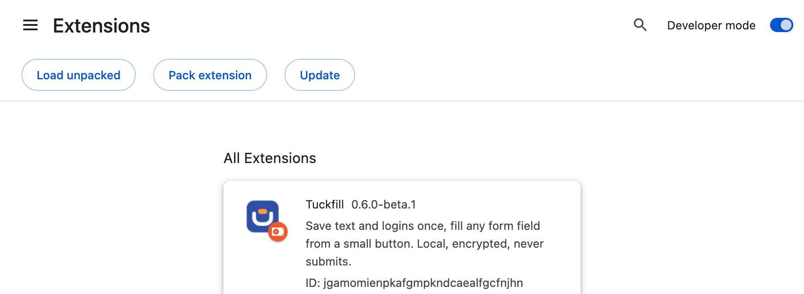
Update ke versi baru: timpa isi folder yang sama dengan isi zip baru, lalu klik ikon reload di kartu Tuckfill. Data kamu tetap ada. Jangan pasang dua Tuckfill sekaligus.
- Butuh Firefox 140 ke atas.
- Buka
tuckfill-firefox-<versi>.xpidi Firefox (drag ke jendelanya). - Klik Add. Tuckfill tetap terpasang walau Firefox ditutup.
File Firefox (.xpi) belum ada di halaman Releases. Touch ID belum bisa di Firefox; pakai PIN 6 angka.
- Butuh Safari 26 ke atas. Unzip file zip ke folder yang tetap.
- Safari → Settings → Advanced → centang Show features for web developers.
- Tab Developer → centang Allow unsigned extensions → Add Temporary Extension… → pilih folder tadi.
- Tab Extensions → pastikan Tuckfill tercentang.
Perlu tahu: Safari mencopot Tuckfill setiap kali ditutup (Cmd+Q), jadi ulangi langkah 3 setiap membuka Safari. Entry kamu tetap ada.
2.Mulai
Buat passphrase
Klik ikon Tuckfill, lalu buat passphrase minimal 10 karakter. Passphrase ini yang mengunci semua entry kamu. Cukup dimasukkan sekali tiap browser dibuka; setelah laptop dikunci, cukup PIN 6 angka atau Touch ID (lihat Kunci, PIN, Touch ID & backup).
Ingat baik-baik. Kalau lupa, data nggak bisa dipulihkan, oleh siapa pun.
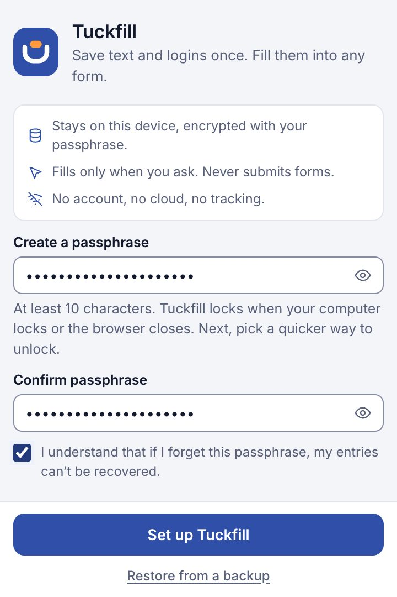
Tambah entry pertama
Klik Add di checklist Get started, isi Name dan Value, lalu klik Add entry.
- Secret: untuk password atau token. Disamarkan (••••), nggak bisa dicari, dan nggak bisa di-copy.
- Only on this site: entry cuma muncul di site yang sedang dibuka. Matikan kalau mau muncul di semua site. Bisa juga untuk beberapa site, port, atau
*.domain: lihat Banyak site & entry. - Group: opsional, untuk mengelompokkan, misalnya "Staging ACME".
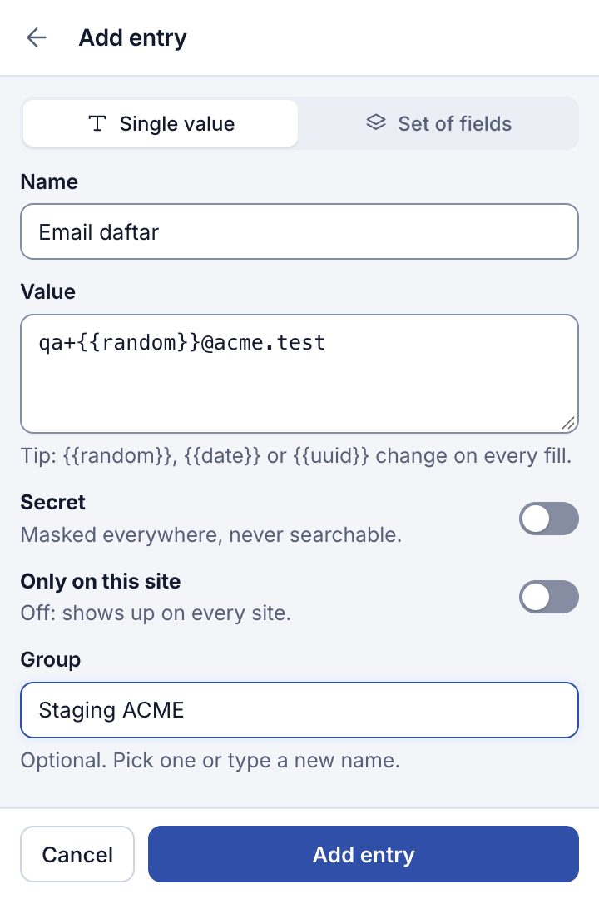
Nilai dinamis
Tulis kode ini di dalam value, dan Tuckfill menggantinya setiap kali mengisi:
| Tulis | Hasilnya | Contoh | Terisi jadi |
|---|---|---|---|
{{random}} | 6 angka acak | qa+{{random}}@acme.test | qa+481920@acme.test |
{{date}} | tanggal hari ini | Order test {{date}} | Order test 2026-11-08 |
{{time}} | jam sekarang | Run {{time}} | Run 14:05 |
{{uuid}} | ID unik yang panjang | {{uuid}} | 3f2b8c1e-… |
3.Nyalakan di sebuah site
Tuckfill cuma aktif di site yang kamu pilih sendiri.
- Buka site yang mau diisi.
- Klik ikon Tuckfill, lalu nyalakan switch di bagian atas (Show the in-field button here).
- Browser akan minta izin untuk site itu saja. Klik Allow.
Untuk mematikannya, matikan lagi switch yang sama. Semua site yang sudah nyala ada di Settings → Sites.
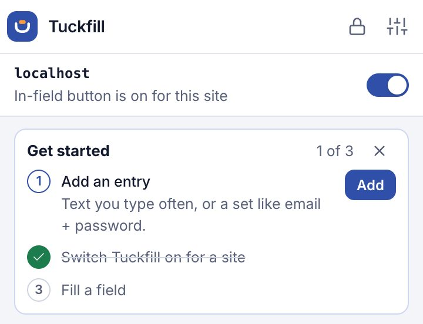
4.Isi field
- Klik field di site itu. Tombol biru kecil muncul di dalam field.
- Klik tombolnya, lalu pilih entry. Bisa juga ketik untuk mencari, lalu tekan Enter.
- Value-nya masuk ke field. Tuckfill nggak pernah submit form, jadi kamu bisa cek dulu. Salah pilih? Klik Undo.
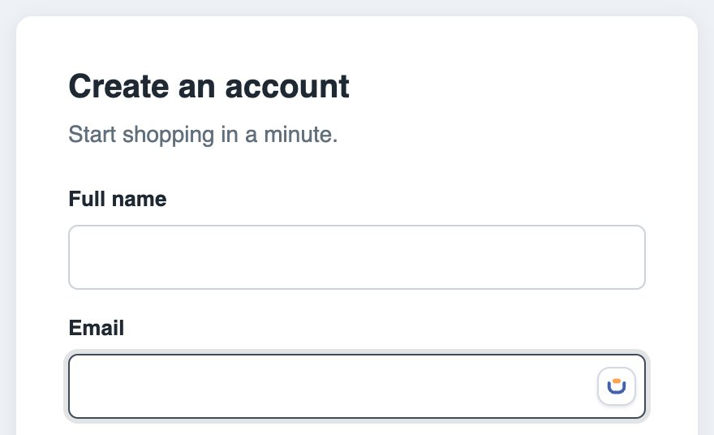
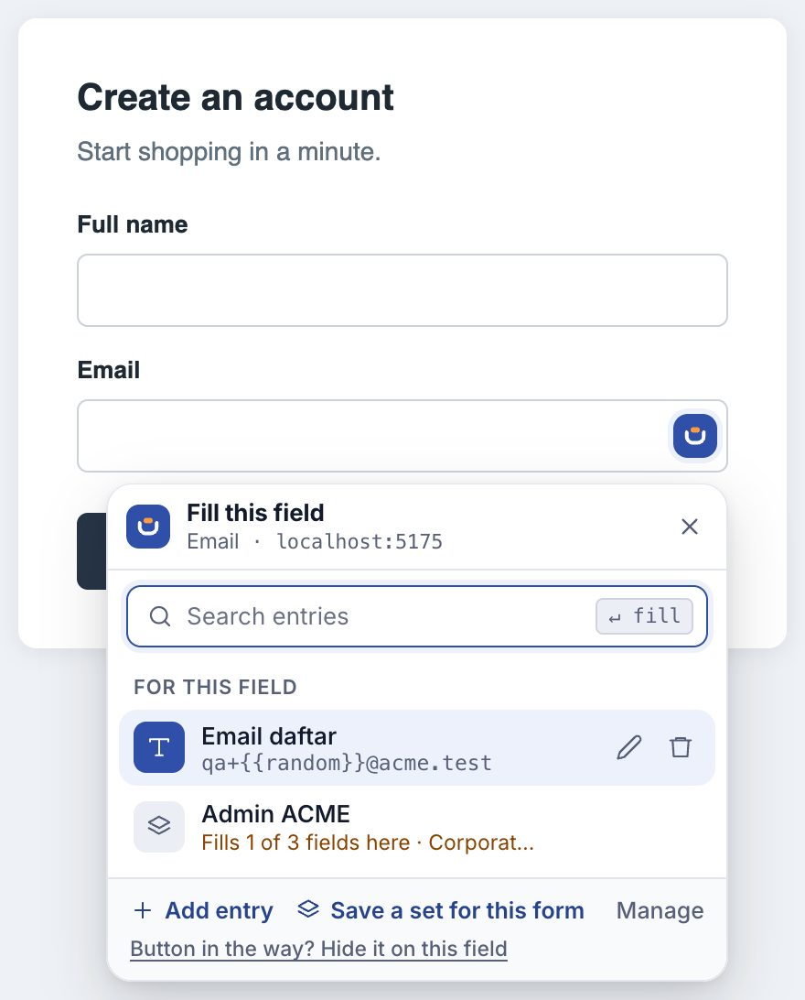
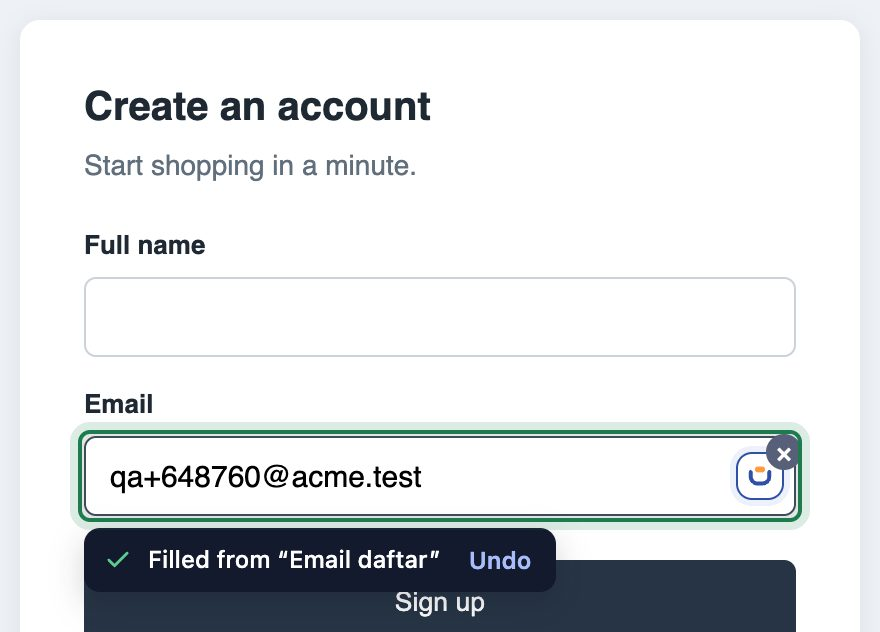
Keyboard: klik field, lalu tekan Alt + Shift + F (Mac: ⌥ Option + Shift + F). Di picker, pakai ↑ ↓ dan Enter; Esc untuk menutup.
5.Set: isi beberapa field sekaligus
Untuk akun test yang terdiri dari beberapa value, misalnya Corporate ID + User ID + Password, buat satu set:
- Klik Add entry, lalu pilih Set of fields.
- Beri nama tiap field mirip label di form-nya ("Email", "User ID", "No. HP", "Kata sandi"), lalu isi value-nya.
- Tandai password sebagai Secret.
Klik field mana saja di form itu, lalu pilih set-nya. Tiap value masuk ke field yang namanya cocok.
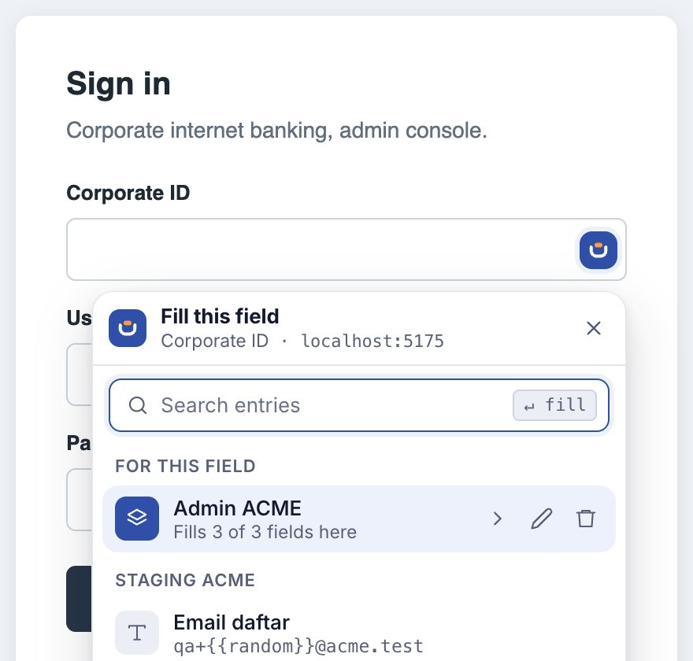
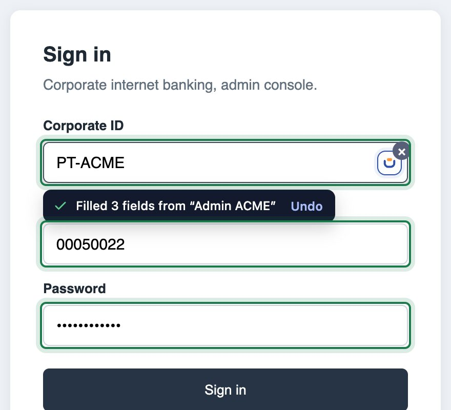
- Value yang nggak ketemu field-nya dilewati, nggak ditebak. Toast-nya memberi tahu, misalnya "Filled 2 of 3, 1 not found".
- Password cuma diisi ke field password.
- Satu Undo mengembalikan semua field.
- Dalam satu set, semua
{{random}}memakai angka yang sama.
6.Banyak site & entry
Satu entry untuk beberapa site
Di form entry, nyalakan Only on this site, lalu ketik site lain di Add a site dan tekan Enter.
| Tulis | Muncul di |
|---|---|
localhost | localhost di port mana pun |
localhost:8080 | cuma port 8080 |
*.staging.acme.test | staging.acme.test dan semua subdomain-nya |
- Boleh paste URL lengkap. Tuckfill cuma mengambil nama site-nya; http dan https dianggap sama.
- Wildcard yang terlalu luas, misalnya
*.comatau*.co.id, ditolak. - Untuk wildcard, klik Allow supaya tombol Tuckfill langsung menyala di semua subdomain-nya.
Kalau entry sudah banyak
Lebih dari 15 entry, popup cuma menampilkan This site dan Recent. Sisanya ada di baris N more in N groups. Search mencari di semua entry, termasuk nama group dan site, dan bisa pakai inisial: tpcm menemukan "Test Payment Corp Maker". Isi Secret nggak pernah ikut dicari.
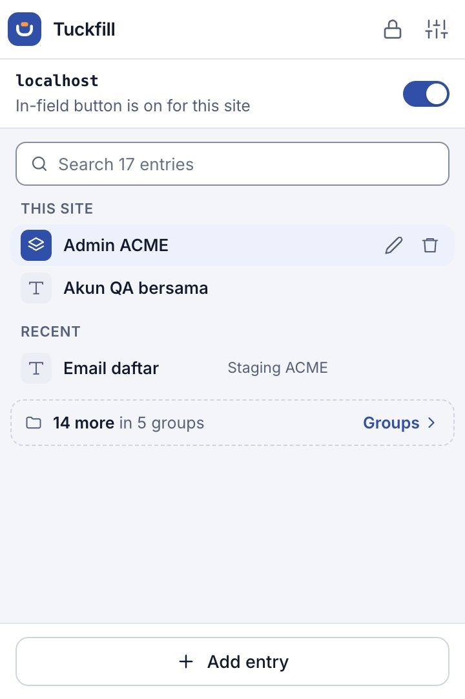

Halaman All entries
Dari daftar group, klik Manage all entries. Di sana kamu bisa memindahkan beberapa entry ke group, mengatur site-nya, atau menghapusnya sekaligus, dan melihat semua site tempat Tuckfill menyala.
Halaman ini menampilkan seluruh isi Tuckfill, jadi selalu minta PIN, Touch ID, atau passphrase setiap kali dibuka, walaupun popup sedang terbuka.
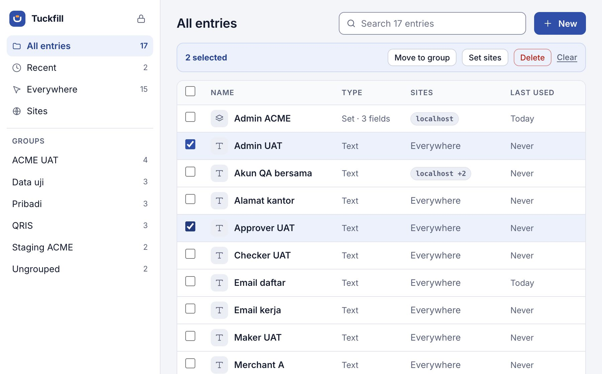
7.Kunci, PIN, Touch ID & backup
Semuanya ada di Settings (ikon slider di kanan atas popup).
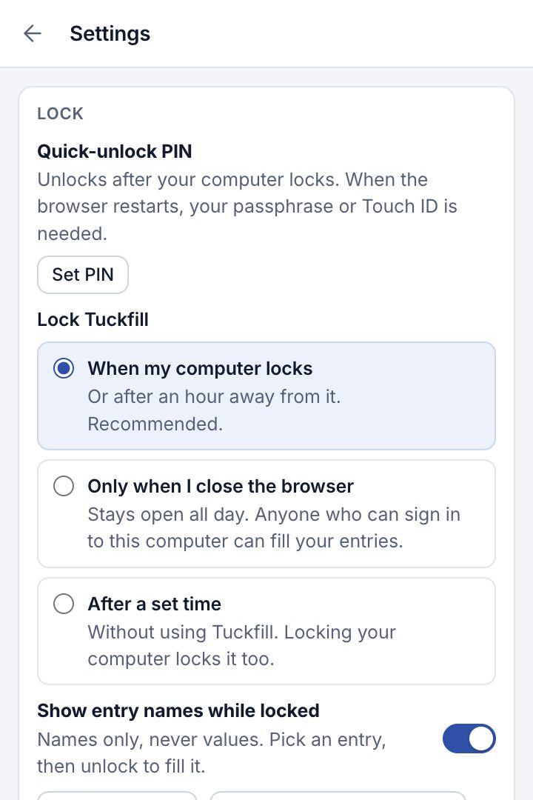
Kunci otomatis
Tuckfill ikut terkunci saat laptop dikunci atau sleep, setelah 1 jam laptop nggak disentuh, dan saat browser ditutup. Firefox dan Safari nggak tahu kapan laptop dikunci, jadi di sana Tuckfill terkunci setelah 15 menit. Mau pakai timer (5 menit sampai 4 jam)? Atur di Settings → Lock.
PIN 6 angka
Settings → Lock → Set PIN. Setelah laptop dikunci, cukup ketik PIN. Setelah browser dibuka ulang, tetap perlu passphrase atau Touch ID. Salah PIN 5 kali, Tuckfill terkunci penuh.
Touch ID / Windows Hello
Settings → Lock → Unlock with Touch ID. Simpan passkey-nya ke iCloud Keychain atau Google Password Manager, jangan ke "This Chrome profile". Passphrase tetap diminta tiap 2 minggu supaya nggak lupa. Di dalam halaman web, Touch ID cuma jalan di site https.
Membuka kunci di dalam halaman
Passphrase cuma diketik di Tuckfill sendiri, nggak pernah di dalam halaman web. Di picker cukup PIN atau Touch ID; kalau dua-duanya nggak bisa, picker menampilkan Open Tuckfill. Nama entry tetap kelihatan saat terkunci (isinya nggak). Nggak mau nama kelihatan? Matikan Show entry names while locked.
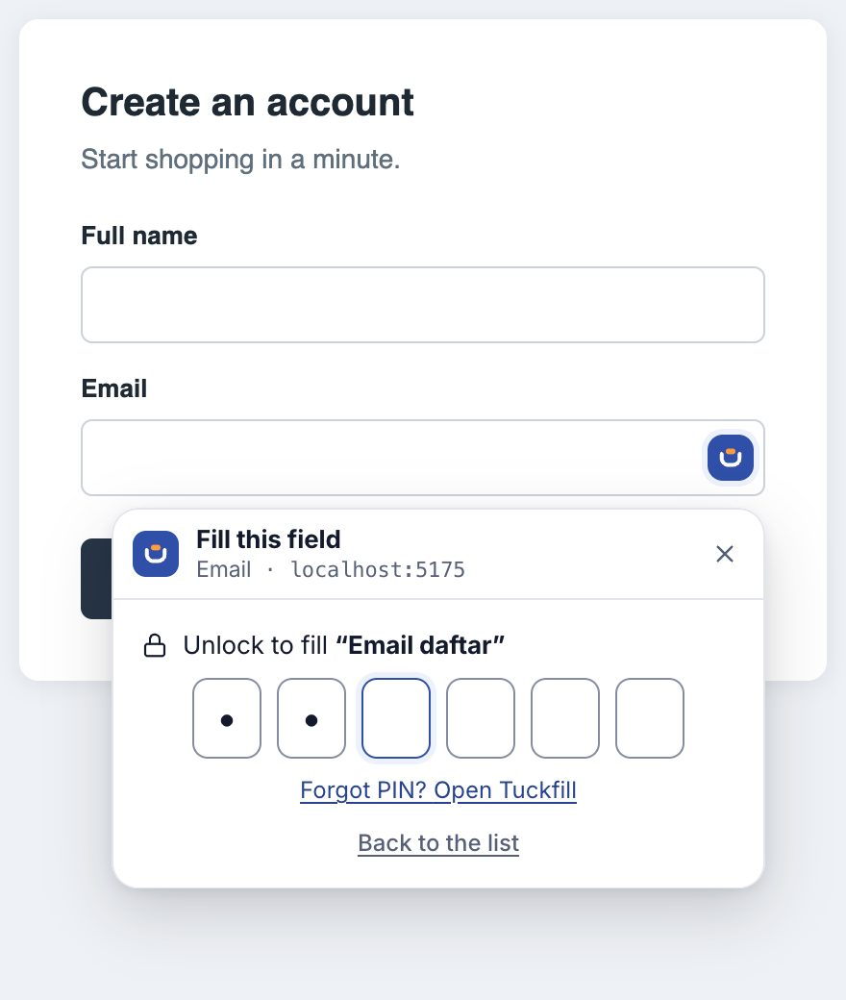
Backup
- Export menyimpan file
.tuckfillterenkripsi yang dibuka dengan passphrase yang sama. Lakukan rutin: ini satu-satunya cadangan kalau laptop rusak. - Import menggabungkan file
.tuckfillatau.csvtanpa menghapus entry yang sudah ada. - Di laptop baru, pilih Restore from a backup waktu setup.
- Ada juga export ke CSV biasa, tapi file itu nggak terenkripsi.
FAQ
Aman nggak? Datanya disimpan di mana?
- Semua data tetap di laptop kamu, di dalam profil browser. Nggak ada akun, cloud, atau server: Tuckfill sama sekali nggak mengirim apa pun lewat internet.
- Entry dienkripsi (AES-256) dengan kunci dari passphrase kamu (PBKDF2, 600.000 putaran). Passphrase-nya sendiri nggak pernah disimpan.
- Situs web nggak bisa membaca entry kamu. Situs cuma dapat satu value yang kamu pilih untuk diisi.
- Secret selalu disamarkan, nggak bisa dicari, dan nggak bisa di-copy.
- Saat Tuckfill terbuka, orang yang memegang laptop kamu bisa memakainya, jadi kunci laptop kalau ditinggal (Tuckfill ikut terkunci).
- Uninstall Tuckfill berarti datanya ikut terhapus. Simpan backup terenkripsi.
Cara update ke beta yang baru?
Timpa isi folder yang sama dengan isi zip baru, lalu klik ikon reload di kartu Tuckfill di chrome://extensions. Entry kamu tetap ada.
Nanti setelah rilis resmi, masangnya gimana?
Setelah Tuckfill ada di Chrome Web Store: klik Add to Chrome, selesai, dan update datang otomatis. Versi Store dianggap extension yang berbeda, jadi sebelum pindah, Export backup dulu dari versi beta, lalu Restore from a backup di versi baru.
Lupa passphrase?
Kalau Tuckfill masih terbuka, atau bisa dibuka pakai PIN atau Touch ID: Settings → Change passphrase, lalu konfirmasi pakai PIN atau Touch ID. Kalau sudah terkunci penuh dan nggak punya Touch ID, passphrase nggak bisa dipulihkan: pilih "Forgot passphrase?" untuk reset (semua entry terhapus), lalu restore dari backup kalau punya.
Batasan
- Maksimal 1.000 entry (sekitar 3 MB). Satu value maksimal 5.000 karakter, nama entry 60 karakter, dan 2–12 field per set. File import maksimal 5 MB.
- Belum bisa mengisi dropdown, checkbox, radio button, atau field di dalam iframe dari site lain.
- Value yang diisi pasti terlihat oleh site itu (memang itu tujuannya), jadi isi hanya di site yang kamu percaya.
Kalau ada masalah
Tombol nggak muncul di field
Pastikan switch site di popup sudah menyala. Tuckfill cuma jalan di halaman http/https biasa, nggak di halaman chrome:// atau Chrome Web Store.
Switch site nggak bisa dimatikan
Site itu menyala lewat wildcard, misalnya *.acme.test. Matikan wildcard-nya di Settings → Sites.
Entry nggak muncul di site yang benar
Cek site di entry itu. localhost:8080 nggak muncul di localhost:3000; pakai localhost saja untuk semua port.
"Tuckfill is hidden by this page, so it didn't fill"
Halaman itu membuat Tuckfill transparan atau menutupinya, jadi Tuckfill menolak mengisi demi keamanan. Extension lain yang mengubah tampilan halaman (misalnya pengubah mode gelap) bisa juga jadi penyebabnya: coba matikan sebentar. Kalau terjadi di site yang kamu percaya, laporkan.
Entry hilang setelah update
Harusnya nggak, karena Tuckfill punya ID yang tetap di folder mana pun. Pastikan versi lama sudah di-remove, lalu buka popup lagi. Kalau masih kosong, restore dari backup dan laporkan.
Laporkan bug
- Buka Settings, scroll ke About, lalu klik Copy. Ini meng-copy versi Tuckfill, browser, dan OS, tanpa entry atau site kamu.
- Buka issue berisi: hasil Copy tadi, alamat site-nya, langkah yang kamu lakukan, apa yang seharusnya terjadi, apa yang terjadi, dan screenshot form-nya.
Hati-hati: jangan kirim password, isi entry, atau screenshot popup yang menampilkan entry kamu.